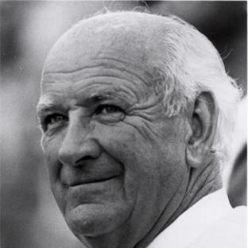
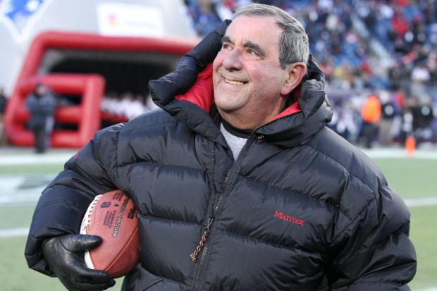
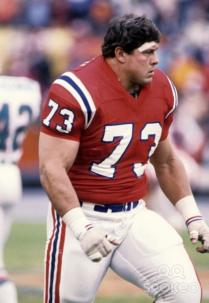
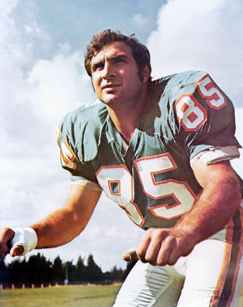

Hall Of Fame
Contributors
Billy Sullivan
Billy Sullivan In a fitting tribute on the occasion of the New England Patriots 50th anniversary celebration in 2009, Patriots Chairman and CEO Robert Kraft inducted the franchise’s original owner, Billy Sullivan, into the Patriots Hall of Fame as a contributor. Sullivan is the first contributor to be inducted into the Hall of Fame. Sullivan and a consortium of businessmen mustered up enough cash in 1959 to secure the eighth and final AFL franchise in a new league that would attempt to do what many had tried and failed to do before them -- battle the established NFL. Dubbed “The Foolish Club”, the original eight AFL owners persevered and succeeded. The two league’s merged in 1970. Sullivan owned the club until 1988 when he sold to razor magnate Victor Kiam. But while professional football in New England had failed to take root in previous attempts, Sullivan’s effort laid the groundwork for today’s Patriots. Under Sullivan, the 1963 Patriots played for the AFL Championship. He also oversaw NFL playoff teams in 1976, 1978, 1982, 1985 and 1986 with an AFC Championship and Super Bowl berth in 1985.

Gil Santos
Gil Santos was the voice of the Patriots for 36 seasons - touching five decades. The venerable Santos called 743 career Patriot games and earned the moniker “Voice of the New England Patriots.” Patriots owner and CEO Robert Kraft surprised Santos with the announcement that the legendary radio broadcaster would become the 20th person to be inducted into the Patriots Hall of Fame and just the second non-player to earn the honor as a contributor for his off-field contributions to the team. It is the highest honor the team can bestow an individual. Santos began calling games for the Boston Patriots at Fenway Park in 1966. For the first five seasons, he provided color analysis alongside veteran play-by-play man Bob Starr. When the team moved to Foxborough in 1971, Santos moved into his current role as play-by-play voice of the Patriots (1971-79). WBZ lost the Patriots radio rights in the 1980s, but got them back in 1991 at which time it returned Santos to his natural position as Voice of the New England Patriots, a position he held for the 22 more seasons until his retirement following the 2012 season. The veteran play-by-play broadcaster was also the sports director of WBZ News Radio in Boston, where he earned dozens of awards and honors for his reporting, sportscasting and play-by-play excellence. He retired from WBZ after 38 years in 2009 and was inducted into the Massachusetts Broadcasters Hall of Fame that year. In addition to his work at WBZ, the skilled play-by-play broadcaster also called basketball games for the Boston Celtics and Providence Friars, as well as football games for the Penn State Nittany Lions, Boston College Eagles, Brown Bears and Boston Breakers of the USFL. Inducted 2013.
Players
John Hannah
John Hannah played his entire career with the Patriots from 1973 through the 1985 Super Bowl season and was dubbed "The Greatest Offensive Lineman of All Time" by Sports Illustrated. A durable player at a physical position, Hannah played in 183 games and missed only five games due to injury. He was one of only two Patriots voted to the NFL’s 75th anniversary team. The nine-time Pro Bowler earned Offensive Lineman of the Year honors for four straight years (1978-81). He anchored the 1978 offensive line that set an NFL record with 3,165 rushing yards - a record which has not been challenged since. In 1991, Hannah was inducted into the Pro Football Hall of Fame and was the initial member of the Patriots Hall of Fame. In 1999, Hannah was inducted into the College Football Hall of Fame for his outstanding career at the University of Alabama under coach Bear Bryant. Hannah is still active with the Patriots organization even while making his home in Alabama. Inducted 1991.
Nick Buoniconti
Nick Buoniconti played linebacker for the Patriots from 1962-68 and was voted an American Football League All-Star five times, including 1966 when he was the top vote getter. The Springfield, Mass., native took night classes during the season at Suffolk University and received his law degree in 1968. In 1970, Buoniconti was named to the All-AFL Team commemorating the best players in that league’s history. Hall of Fame quarterback Len Dawson said of Buoniconti, "If you are lucky enough to knock him down, you have to lay on him or he'll get right back into the play." In 1992, Buoniconti was inducted into the Patriots Hall of Fame and in 2001, he was named to the Pro Football Hall of Fame. Bouniconti was traded by the Patriots in 1969 to the Miami Dolphins where he excelled as part of Miami’s 1972 undefeated championship team. He still resides in South Florida. Inducted 1992.
Gino Cappelletti
Gino Cappelletti is the “original Patriot” and perhaps the most recognized figure in franchise history. A versatile player, Cappelletti played wide receiver and kicker for the Patriots from 1960-70 and was the Patriots all-time leading scorer until 2005 when he was surpassed by Adam Vinatieri. He led the American Football League in scoring five times and holds two of the top five scoring seasons in league history – 147 points in 1961 and 155 points in 1964, a season in which he named the AFL’s Most Valuable Player. Cappelletti was voted an AFL All-Star five times and still holds the Patriots records for career field goals made. He also remains among the top 10 receivers in Patriots history. After his playing career ended, Cappelletti moved into the broadcast booth with his longtime partner Gil Santos. For the better part of the past quarter century, Santos and Cappelletti have been the voices of the Patriots for millions of New England football fans. In 1992,Cappelletti was inducted in the Patriots Hall of Fame. The Minnesota native makes his home in Massachusetts. Inducted 1992.